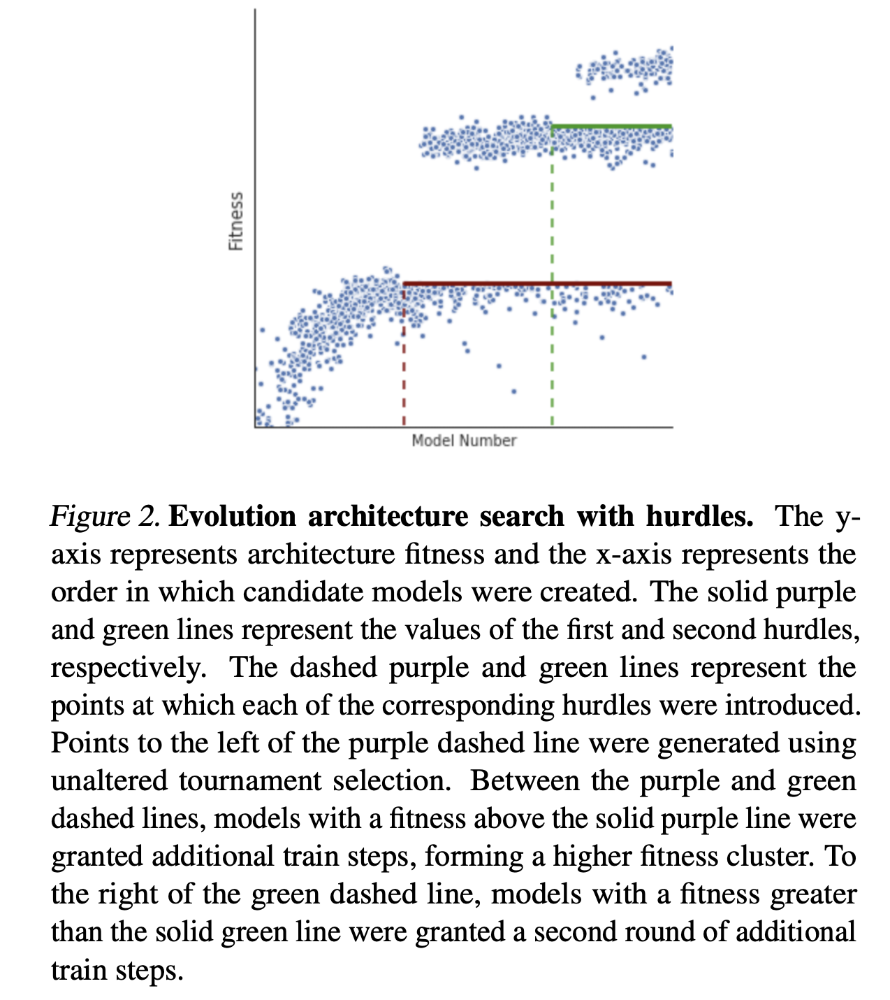
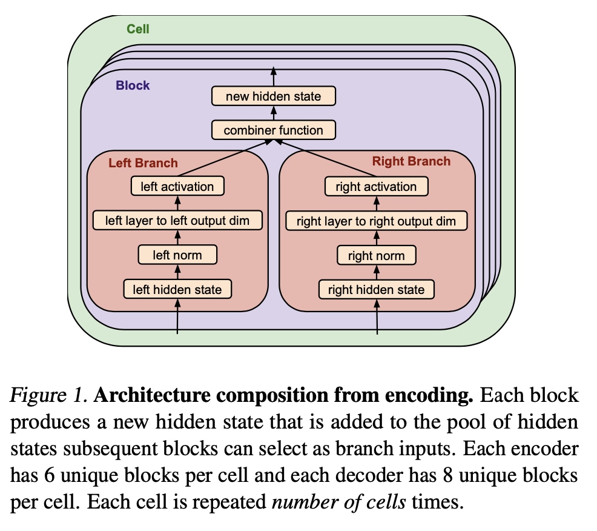
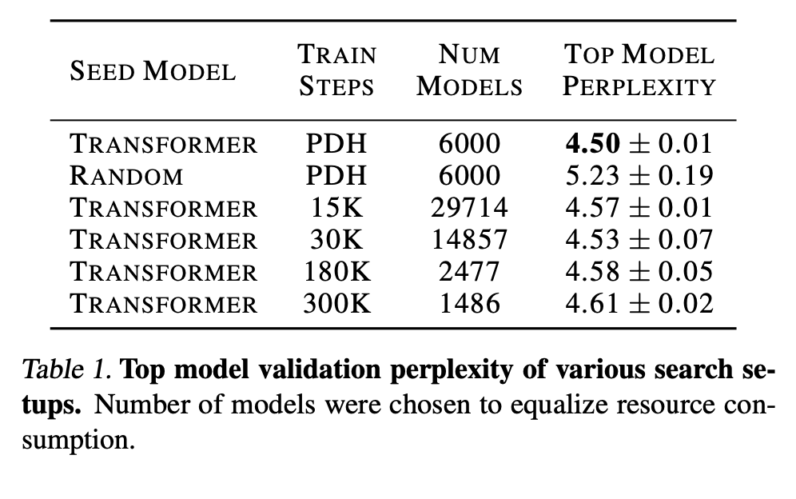
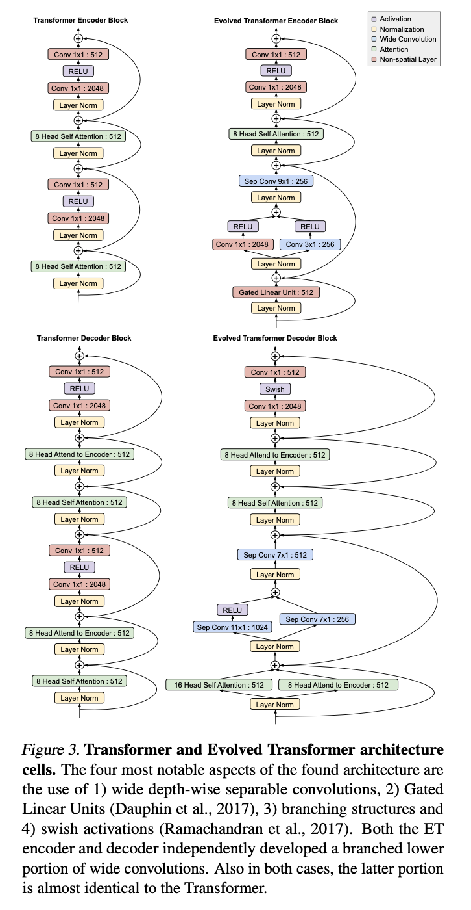
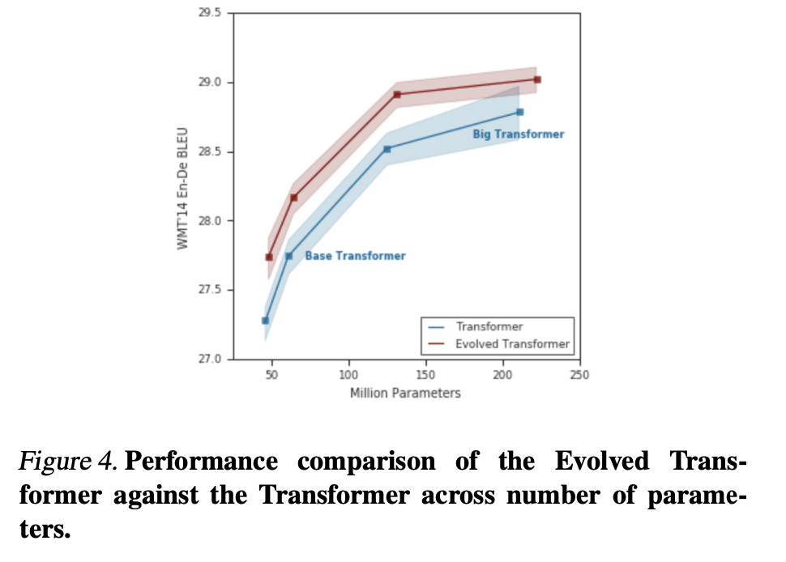

1. Read the title and make an opinion of what’s in the paper (e.g., the area, the task)
Year: 2019, cited (193)
The Evolved Transformer
Clearly a Transformer paper, and probably looking at ways to improve the transformer architecture.
2. Read the abstract well and form a hypothesis of
- What’s new in the paper?
- Do you have a clear overview about what the paper is all about?
neural architecture search (NAS) has begun to outperform human-designed models.
NAS is pretty general, as there are many hyperparameters that can be selected, what is the extent at which this paper searches?
Our goal is to apply NAS to search for a better alternative to the Transformer.
Transformers today are still wildly popular, so this may not be a successful find. However, it also may complement Transformers.
We first construct a large search space inspired by the re- cent advances in feed-forward sequence models and then run evolutionary architecture search with warm starting by seeding our initial population with the Transformer.
This is interesting, it seems like an evolutionary search with Bert as the starting point. How large is the search space composed, and what does the searching, another NN?
To directly search on the computationally expensive WMT 2014 English- German translation task, we develop the Progressive Dynamic Hurdles method, which allows us to dynamically allocate more resources to more promising candidate models.
This is a necessity when compute requirements get large enough.
3. Look at the images and extract a set of “questions” about what is not clear about their method from the images. Now your job is to answer these questions by reading the paper.
There seems to be two contributions the paper is presenting. One is the output of their NAS, the ‘Evolved Transformer’ and the other is the Evolution Architecture with search hurdles.
Architecture with search hurdles.
The architecture search with hurtles is shown in figure 2 below.

The strong ‘hurdle’ lines show where training was increased, so dots under the hurdle stay, and dots above the hurdle get more rounds of training and therefore progress further. Interesting approach. Seems to me to be an elegant solution with simple steps to complete.
Figure 1 shows something to do with the Architecture search, but I don’t understand it so I will have to read the method.

4. Read the method aiming to answer your “questions” about the paper. Focus on understanding only the things relevant for the story (i.e., to understand the contribution).
Their evolution based search seems to come from a couple of different papers.
We use the same tournament selection (Goldberg & Deb, 1991) algorithm as Real et al. (2019), with the aging regularization omitted, and so encourage the reader to view their in-depth description of the method.
The method essentially has a ‘gene pool’ of selection options, and parents are trained and the most fit parents are mutated to create children, and the process continues as compute enables.
They note that crucially they ensure the search space can represent the transformer. This is necessary so that they could seed it with the transformer architecture.
The search base consist of two stackable cells that you can create an encoder and decoder structure.
Do your own contains the search base that the paper looks at, or each block is a gene that can be modified. The paper says the search space for this setup is models. So, huge.
But one way to manage that space is to guarantee a good parent in the space, which is why the seed of the original transformer is important.
In regards to the Tournaments style of training with the progressive hurdles, the comments that acknowledge that good models might have better performance in later stages of training, but by eliminating the resources needed by poorly performing models, you make up for this by giving the best models enough compute so the space can be adequately searched. There is certainly a tradeoff here, but they argue their empirical results are prove of it being a worthwhile tradeoff.
5. Read the experiments to convince you that the show results are caused by their claim. Be aware that the experiments highlighted are the best scenarios and are fully hyper-parameter tuned.
They show in table 1 that the Transformer with PDH gives the best perplexity.

Figure 3 shows the final ‘Evolved Transformer’ Architecture.

They note:
The four most notable aspects of the found architecture are the use of 1) wide depth-wise separable convolutions, 2) Gated Linear Units (Dauphin et al., 2017), 3) branching structures and 4) swish activations (Ramachandran et al., 2017)
They show that ET (Evolved Transformer) outperforms the Transformer at all size variants.

6. Make sure you answered all your questions. Did the authors convince you that their story has the effect that they claim?
This is a very interesting paper and seems to have motivated future work looking at BERT. Since there are no references to BERT, it seems like this paper came before BERT, so it would be interesting to see how the findings they have of the different genetic mutations found to be most performant would affect newer models today. This was a fun paper to read and to get a little more insight into NAS.